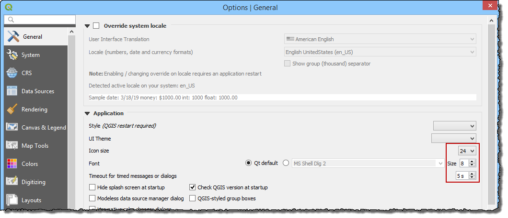

High Definition Screens¶
If the computer has a high definition resolution or ultra-high definition resolution, QT creator and QGIS may need an adjustment so all windows can be loaded correctly.
For QT Creator Windows¶
If the data in Widgets and Dialog Boxes is squeezed or not readable, set the Environmental Variables for QT Creator scaling factor, on the Advanced tab of the System Properties window, following the figures shown below. Set the Environmental Variables for the System not the user.
For QGIS, navigate to Settings > Options > General and set the icon size to 24 and the text size to 8. Try a few different combinations to suit the current screen.
